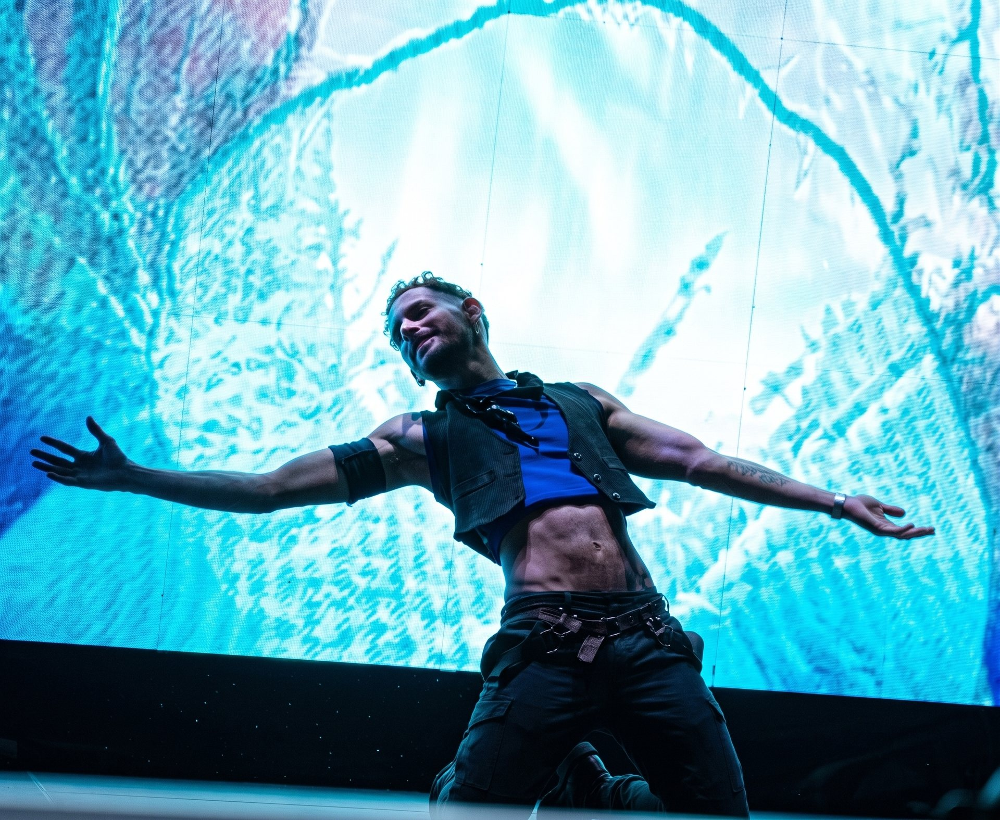
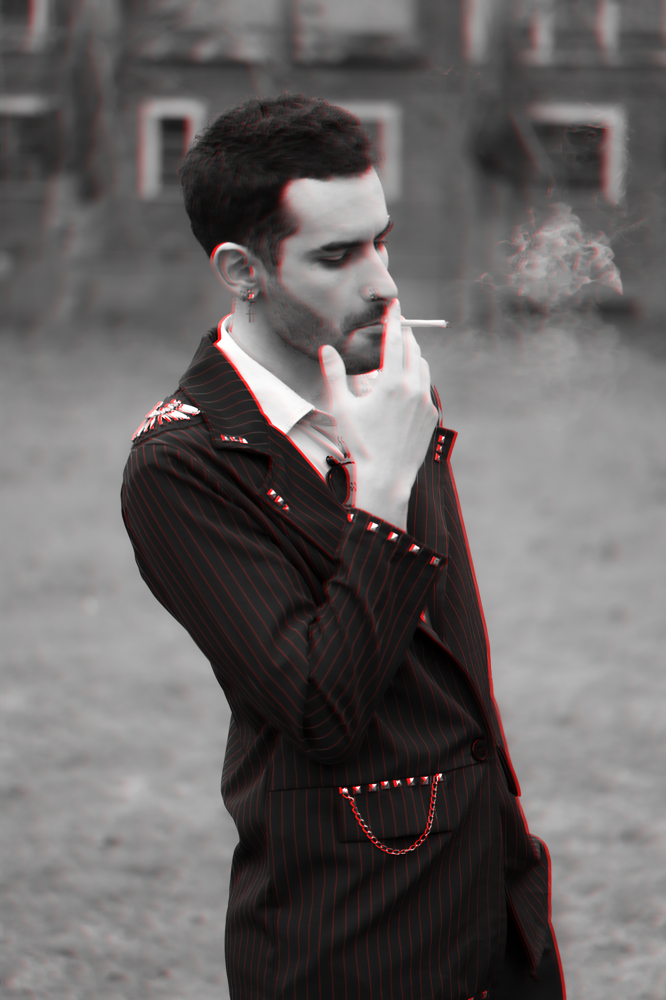

Una propuesta artística que reduce el ruido visual para priorizar la presencia escénica, el pulso instrumental y la atmósfera de lujo nocturno.


Se eliminaron los excesos cromáticos. El sitio ahora utiliza un fondo negro obsidiana puro (`#030305`), acentos vibrantes pero selectos en **Ámbar neón (`#ffb703`)** y **Rosa carmesí intenso (`#ff0054`)**, logrando que las fotografías y el artista respiren con elegancia y alta distinción.
(Concepto 2: Paleta de azules medianoche profundos con destellos ámbar y tipografía editorial serif)